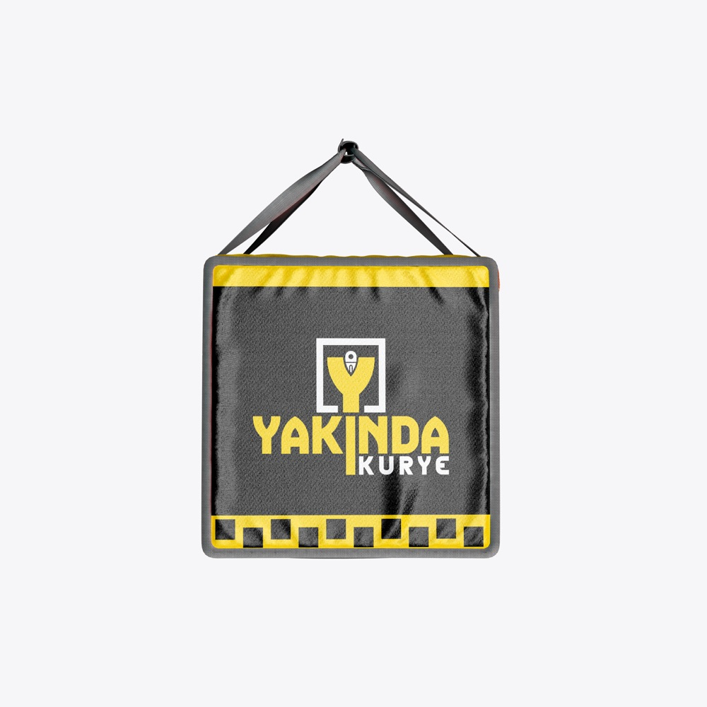

Moto Kurye Ekipmanları: Zorunlu ve Önerilen Ekipman Listesi (2026)
Kask ve eldiven artık zorunlu; peki bir moto kuryenin sahada güvende ve konforlu olması için başka neye ihtiyacı var? Zorunlu ve önerilen ekipmanları ayrı ayrı listeledik.

Kuryelikte ekipman yalnızca bir konfor meselesi değildir. Doğru kask, eldiven ve mont; olası bir kazada yaralanma riskini azaltır, kötü havada çalışmayı mümkün kılar ve uzun vardiyaları daha az yorucu hâle getirir. Bu yazıda hem yasal olarak zorunlu olan hem de sahada fark yaratan ekipmanları listeledik.
Yasal olarak zorunlu ekipmanlar
Kask
Karayolları Trafik Yönetmeliği'ne göre motosiklet sürücülerinin kask takması zorunludur. Kuryeler için tam yüz (full face) veya çene kısmı kapanabilen (modüler) kasklar en iyi korumayı sağlar. Kask alırken ECE 22.05 veya daha güncel ECE 22.06 gibi bir güvenlik sertifikası taşıdığından ve başınıza tam oturduğundan emin olun.
Koruyucu eldiven
4 Kasım 2025'te Karayolları Trafik Yönetmeliği'nde yapılan değişiklikle motosiklet sürücüleri için koruyucu eldiven de zorunlu hâle geldi. Avuç içi ve parmak eklemlerinde koruması olan, kavrama hissini azaltmayan eldivenler tercih edilmelidir.
Kurye işletmelerinin yükümlülükleri
Mayıs 2025'te kurye işletmeciliğine yönelik yapılan düzenlemeyle, kurye işletmelerine kuryelerine koruyucu ekipman sağlama ve yelek ile kaskta "KURYE" ibaresine yer verme gibi yükümlülükler getirildi. Ayrıca kurye işletmelerinin motosikletlerinde kullanılan teslimat kutusunun ruhsata işlenmiş olması gerekiyor. Bir kurye firmasında çalışıyorsanız bu ekipmanların firmanızca sağlanması gerekir.
Önerilen ekipmanlar
- Koruyuculu mont ve pantolon: Omuz, dirsek, sırt ve dizlerde CE sertifikalı koruma pedleri olan, nefes alabilen kumaşlar.
- Dizlik ve botlar: Ayak bileğini destekleyen, kaymayan tabanlı botlar.
- Yağmurluk: Mont üzerine giyilebilen, su geçirmez ve görünür renkte bir takım.
- Reflektörlü yelek veya şeritler: Akşam ve gece vardiyalarında görünürlüğü artırır.
- Termal çanta veya kutu: Yemeğin sıcak ya da soğuk kalmasını sağlar; düzenli bir çanta teslim süresini de kısaltır.
- Sabit telefon tutucu: Navigasyonu sürüş sırasında elinize almadan takip etmenizi sağlar.
- Powerbank: Uzun vardiyalarda telefonun şarjının bitmesini önler.
Ankara kışı için ekstra öneriler
Ankara'da kış ayları soğuk ve zaman zaman karlı geçer. Kış vardiyalarında termal içlik, rüzgar geçirmeyen boyunluk ve kışlık eldiven büyük fark yaratır. Buzlanma riskine karşı lastiklerinizin diş derinliğini kontrol edin ve sabah erken saatlerde gölgede kalan yollarda hızınızı düşürün.
Ekipmanın bakımı
Kaskın vizörünü düzenli temizleyin, çizilen vizörü değiştirin. Bir darbe almış kaskı görünürde hasar olmasa bile yenileyin. Termal çantayı her gün silin; hem hijyen hem de işletmelerin gözünde profesyonellik açısından önemlidir.